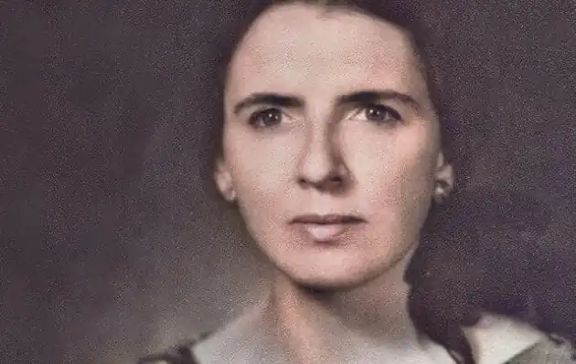
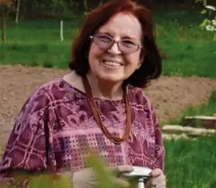

Віра Вовк (порт. Vira Vovk; за паспортом Wira Selanski) народилася 2 січня 1926 року в Бориславі (українські землі довоєнної Польщі, нині Львівська область) у родині лікаря й археолога. Зростала на Гуцульщині в містечку Кути. Навчалася в гімназії у Львові, потім у середній дівочій школі ім. Клари Шуманн у Дрездені.
В еміграції з 1945 року, спочатку в Німеччині, а згодом у Бразилії. Студіювала германістику, славістику, музикологію у Тюбінгенському університеті. З 1949 року разом з матір'ю переїхала до Ріо-де-Жанейро, де закінчила університет, стажувалася також у Колумбійському (Нью-Йорк) і Мюнхенському університеті, де вивчала і порівняльне літературознавство. Здобула докторський ступінь із філософії.
Після отримання освіти, стала професоркою німецької літератури в Державному університеті Ріо-де-Жанейро. З 1957 року — завідувачка кафедрою германістики цього університету. Активно пропагувала українську культуру та мову. Виступала з літературними доповідями, лекціями й авторськими вечорами у Нью-Йорку, Вашингтоні, Філадельфії, Клівленді, Чикаго, Детройті, Торонто, Монреалі, Оттаві, Ванкувері, Лондоні, Парижі, Римі, Мадриді, Мюнхені, Буенос-Айресі, Києві, Львові. Віра Вовк померла 16 липня 2022 року в Ріо-де-Жанейро. Поезія: Збірки "Юність" (1954), "Зоря провідна" (1955), "Єлегії" (1956), "Чорні акації" (1961), "Любовні листи княжни Вероніки" (1967), "Каппа Хреста" (1968), "Меандри" (1979), "Мандат" (1980), "Жіночі маски" (1993), "Писані кахлі" (1999), "Віоля під вечір" (2000) і "Поезія" (2000), драматична поема "Триптих", п'єса "Іконостас України". Проза: "Ранні оповідання" (1943—1954), "Легенди" (1958). "Казки" (1956), "Духи й дервіші" (1956). "Оповідання для дітей" (1960—1962). "Вітражі" (1961), "Святий гай" (1983), "Карнавал" (1986), "Старі панянки" (1995), "Калейдоскоп" (1979—2001). П'єси: "Скарб царя Гороха" (1962), "Смішний святий" (1968), "Триптих" (1982), "Іконостас України" (1988, 1991), "Вінок троїстий" (1988), "Казка про вершника" (1992), "Зимове дійство" (1994), "Весняне дійство" (1995), "Настася Чагрова" (2001), "Козак Нетяга" (2001) й "Крилата скрипка" (2001).